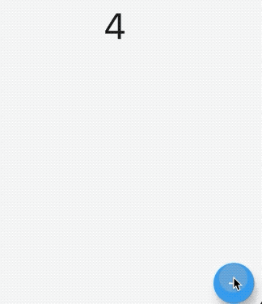
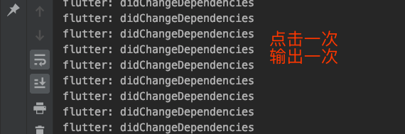
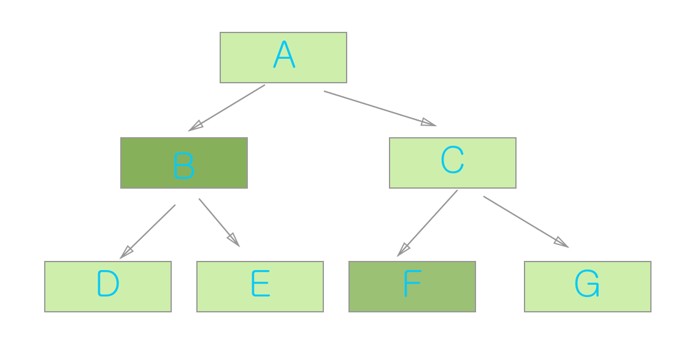

7.2 共享数据
共享数据在我们我们平时开发中很常用的比如Theme.of(context)、Media.of()等等，这些都是 通过of函数获取上级(顶级或者多层级的一级)的数据。它是用InheritedWidget来实现的，提供了一个静态方法of获取实例，通过实例获取其他属性的值。
下边看些例子：存储点击次数的ShareData
class ShareData extends InheritedWidget {
int count;
ShareData({Key key, this.count, @required Widget child})
: super(key: key, child: child);
@override
bool updateShouldNotify(InheritedWidget oldWidget) {
return this != oldWidget;
}
static ShareData of(BuildContext context) {
return context.dependOnInheritedWidgetOfExactType<ShareData>();
}
}
然后用它包裹子部件
class BaseShareData extends StatefulWidget {
@override
_BaseShareDataState createState() => _BaseShareDataState();
}
class _BaseShareDataState extends State<BaseShareData> {
@override
Widget build(BuildContext context) {
return Scaffold(
appBar: AppBar(
title: Text('共享数据'),
),
body: _body(),
floatingActionButton: FloatingActionButton(
child: Icon(Icons.add),
onPressed: () {
setState(() {
_count += 1;
});
},
),
);
}
int _count = 0;
Widget _body() {
return ShareData(
count: _count,
child: BaseShareData2(),
);
}
}
/// 子部件 显示共享数据的count的值
class BaseShareData2 extends StatelessWidget {
@override
Widget build(BuildContext context) {
return Container(
child: Text(
ShareData.of(context).count.toString(),
style: TextStyle(fontSize: 50),
),
alignment: Alignment.center,
);
}
}

每点击一次按钮，数字便会增加1.
didChangeDependencies该函数式 当state的依赖更改时候调用，当依赖更改，则build会重新调用，就是会重绘，刷新页面。
上面的代码稍作修改;
class BaseShareData2 extends StatefulWidget {
@override
_BaseShareData2State createState() => _BaseShareData2State();
}
class _BaseShareData2State extends State<BaseShareData2> {
@override
Widget build(BuildContext context) {
return Container(
child: Text(
ShareData.of(context).count.toString(),
style: TextStyle(fontSize: 50),
),
alignment: Alignment.center,
);
}
@override
void didChangeDependencies() {
print('didChangeDependencies');
super.didChangeDependencies();
}
}
当依赖更改则输出日志：

输出次日志条件是当天子部件必需在ShareData部件下边，否则通知不到该组件，则此函数不会调用。
上边代码再稍微改下，当我们不用父级部件的话是否会调用。
class _BaseShareData2State extends State<BaseShareData2> {
@override
Widget build(BuildContext context) {
return Container(
child: Text(
'test no sharedata',
// ShareData.of(context).count.toString(),
style: TextStyle(fontSize: 50),
),
alignment: Alignment.center,
);
}
@override
void didChangeDependencies() {
print('didChangeDependencies');
super.didChangeDependencies();
}
}
当我们注释掉对父级 的共享的引用，则不会调用didChangeDependencies,页面不会发生重绘动作，性能更好。
didChangeDependencies 到底是做什么的
当次对象的State对象的依赖更改时调用，比如引用了父组件的InheritedWidgget数据，框架将通知次对象有关更改的方法。
当A是共享数据InhertedWidget，B``F是使用了A的数据，那么当A数据变化时，B ->G都谁会刷新？？

flutter: didChangeDependencies
flutter: build true
flutter: build false
flutter: build false
flutter: build false
flutter: didChangeDependencies
flutter: build true
flutter: build false
答案是都会
build一次，但是didChangeDependencies只有2次，感兴趣的同学可以试一下。 原因是顶级 部件build会导致子类都build，并不是dependencies的原因。
如果又想用ShareData的数据但是不想重复更新该怎么办？
那么我们只是需要将of新增一个即可，一个负责刷新，一个只是取值不会刷新的。
static ShareData ofNoRefresh(BuildContext context) {
return context.getElementForInheritedWidgetOfExactType<ShareData>().widget;
}
他们到底有什么联系和区别呢？
看下源码了
///--------dependOnInheritedWidgetOfExactType------
@override
T dependOnInheritedWidgetOfExactType<T extends InheritedWidget>({Object aspect}) {
assert(_debugCheckStateIsActiveForAncestorLookup());
final InheritedElement ancestor = _inheritedWidgets == null ? null : _inheritedWidgets[T];
if (ancestor != null) {
assert(ancestor is InheritedElement);
return dependOnInheritedElement(ancestor, aspect: aspect) as T;
}
_hadUnsatisfiedDependencies = true;
return null;
}
///----getElementForInheritedWidgetOfExactType-----
@override
InheritedElement getElementForInheritedWidgetOfExactType<T extends InheritedWidget>() {
assert(_debugCheckStateIsActiveForAncestorLookup());
final InheritedElement ancestor = _inheritedWidgets == null ? null : _inheritedWidgets[T];
return ancestor;
}
多出的函数如下,该函数就是将渲染obj添加到依赖的数组中。
@override
InheritedWidget dependOnInheritedElement(InheritedElement ancestor, { Object aspect }) {
assert(ancestor != null);
_dependencies ??= HashSet<InheritedElement>();
_dependencies.add(ancestor);
ancestor.updateDependencies(this, aspect);
return ancestor.widget;
}
最终调用了
@protected
void updateDependencies(Element dependent, Object aspect) {
setDependencies(dependent, null);
}
再看一下setDependencies源码：
@protected
void setDependencies(Element dependent, Object value) {
_dependents[dependent] = value;
}
该函数只是将需要依赖的组件加入到数组中_dependents，这个数组就是最终通知到的obj，最终调用了notifyClients中的notifyDependent(oldWidget, dependent)已达到通知组件的效果。
最后调用 的通知函数：
@protected
void notifyDependent(covariant InheritedWidget oldWidget, Element dependent) {
dependent.didChangeDependencies();
}